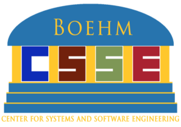

Home¶
Introduction¶
Welcome to the Systems Engineering Library (se-lib) (previously called PyML). It provides capabilities for integrated systems modeling, simulation, analysis and diagrams covering SysML, discrete event and continuous system dynamics simulation, reliability analysis, causal analysis, project management, and more using simple Python code as the glue.
The open source Python scientific computing ecosystem enables advanced analysis with powerful libraries and language features. se-lib is built with Graphviz, Matplotlib, NetworkX, NumPy, PySD, SciPy, and SimPy.


Quick Start¶
Try se-lib instantly with these Colab notebooks in a browser, no installation required.
- se-lib examples

- System dynamics modeling user's guide and examples
- Discrete event modeling user's guide and examples
se-lib also runs on standalone web pages for rapid experimentation and instruction.
Installation¶
For more detailed installation instructions, see the Installation page.
Current Features¶
The current features of se-lib can be found under Function Reference.
Key capabilities include:
- SysML Diagrams: Context diagrams, use case diagrams, activity diagrams, requirements diagrams, block diagrams, and more
- Discrete Event Simulation: Model and simulate discrete event systems with queues, servers, and resources
- System Dynamics: Continuous simulation and causal loop diagrams
- Reliability Analysis: Fault tree analysis and reliability block diagrams
- Project Management: PERT charts, Gantt charts, critical path analysis, and design structure matrices
- Network Analysis: Using NetworkX for complex system relationships
Presentations¶
The following was presented at the 2022 INCOSE San Diego Mini-Conference:
Acknowledgments¶
se-lib research and development is supported by these sponsors:
-  Boehm Center for Systems and Software Engineering
- Naval Postgraduate School Foundation
- Marine Corps Air Station (MCAS) Miramar
Feedback¶
We value your feedback. Tell us how we can make se-lib, its documentation and this website more useful. Please send comments, suggestions and interest in supporting the development to info@se-lib.org.